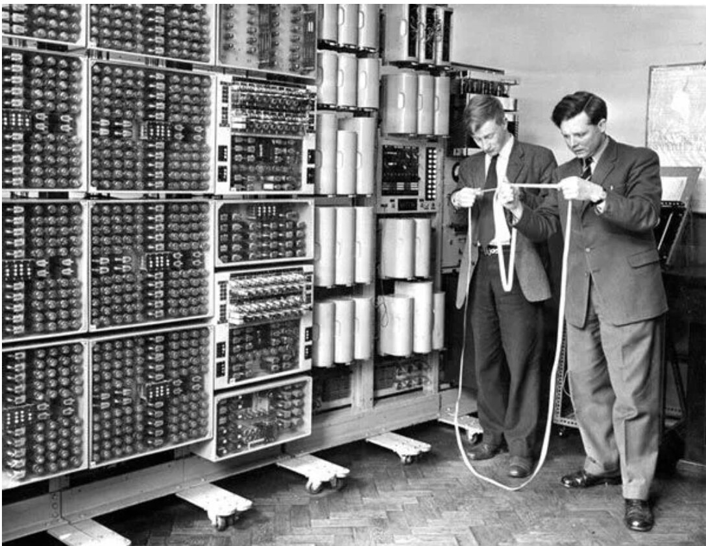
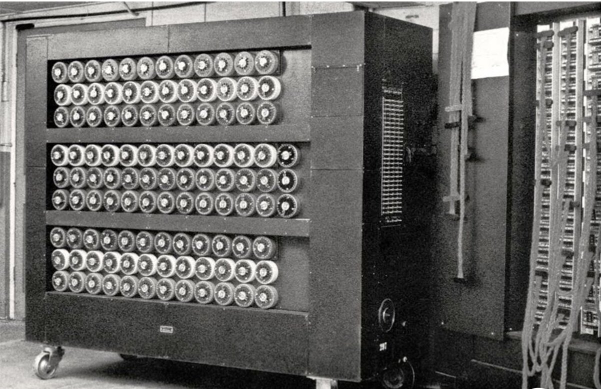
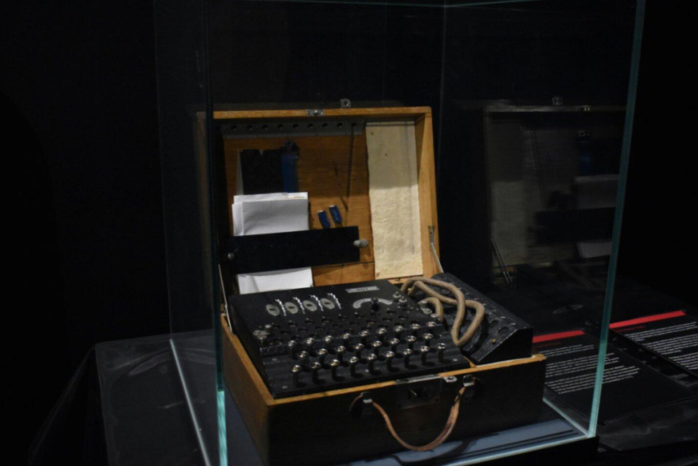
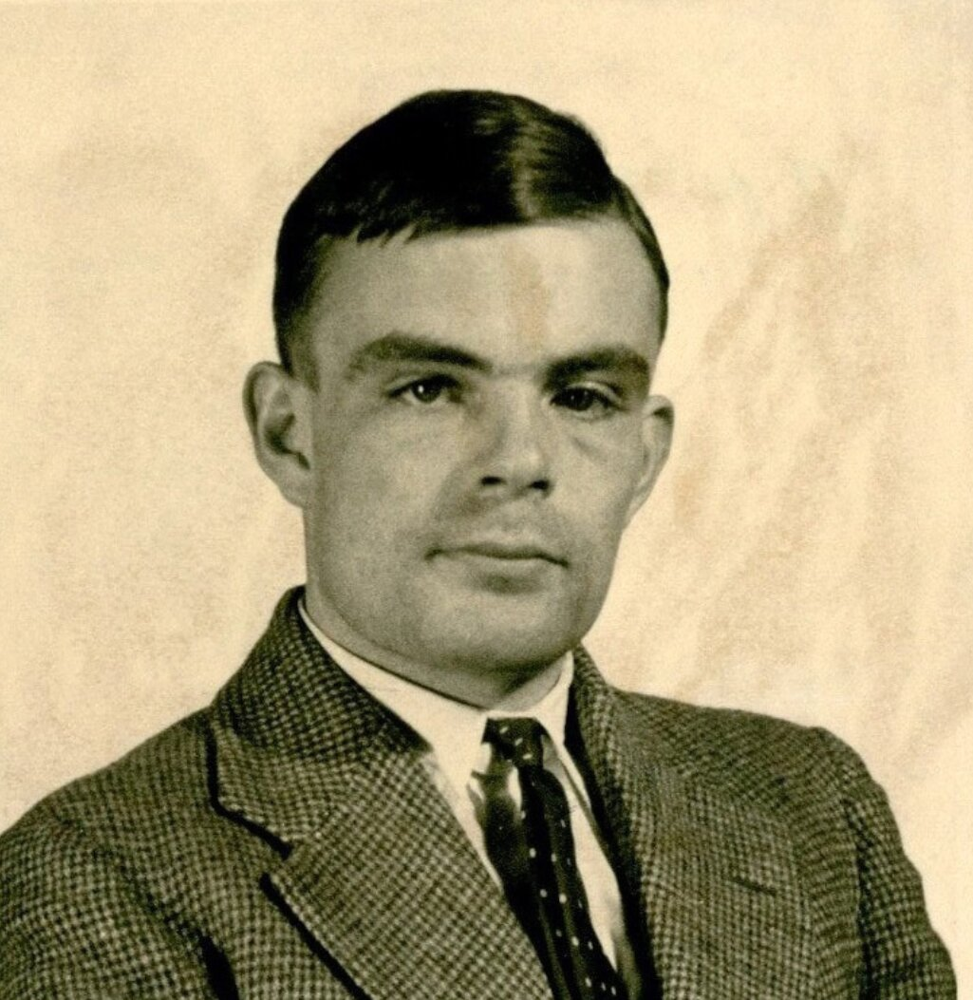
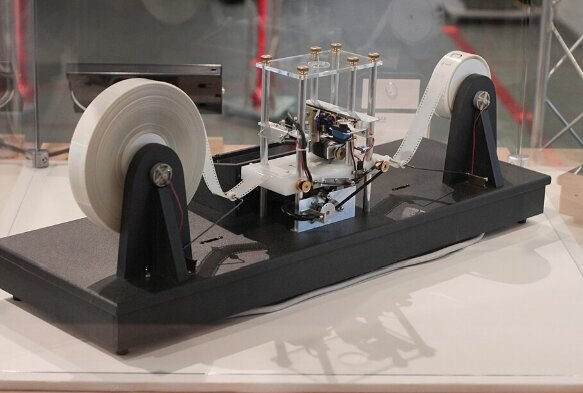

Алан Тюрінг — британський математик, логік і один із засновників сучасної інформатики.



Біографія

Алан Тюрінг
Алан Тюрінг — британський математик, логік,
криптоаналітик і один із засновників сучасної інформатики.
Він народився у 1912 році в Лондоні та ще з молодого віку
виявляв значний інтерес до математики, логіки й природничих наук.
Навчався у Королівському коледжі Кембриджського університету,
де займався математикою та досліджував фундаментальні питання,
пов’язані з логікою й можливостями обчислень.
Одним із найважливіших внесків Тюрінга стала його робота
«On Computable Numbers», опублікована у 1936 році.
У ній він запропонував абстрактну модель обчислювальної машини,
яка сьогодні відома як машина Тюрінга. Ця модель дала змогу
формально описати поняття алгоритму та визначити, які задачі
можуть бути розв’язані за допомогою послідовності чітко заданих
операцій. Ідеї Тюрінга стали важливою теоретичною основою
майбутнього розвитку комп’ютерів і програмування.
Під час Другої світової війни Тюрінг працював у британському
центрі криптоаналізу Блетчлі-Парк. Там він брав участь у роботі
над розшифруванням німецьких військових повідомлень,
зашифрованих машиною Enigma. Тюрінг розробляв
математичні методи криптоаналізу та працював над удосконаленням
електромеханічної машини Bombe, яка допомагала знаходити
можливі налаштування Enigma та значно прискорювала процес
розшифрування повідомлень.
Після війни Тюрінг продовжив займатися розвитком обчислювальної
техніки. Він працював над проєктами ранніх електронних комп’ютерів
і досліджував питання, пов’язані зі штучним інтелектом.
У 1950 році він опублікував статтю
«Computing Machinery and Intelligence», у якій поставив
відоме питання: «Чи можуть машини мислити?». У цій роботі він
запропонував підхід, який пізніше отримав назву тесту Тюрінга
і став одним із найвідоміших концептуальних підходів до оцінювання
поведінки інтелектуальних машин.
Наукові інтереси Тюрінга не обмежувалися лише математикою
та комп’ютерами. В останні роки життя він також досліджував
математичні закономірності у біології, зокрема процеси
морфогенезу — формування структур і візерунків у живих організмах.
Його роботи вплинули на розвиток багатьох напрямів науки:
від теоретичної інформатики та криптографії до штучного інтелекту
й математичної біології.
Цитата
We can only see a short distance ahead, but we can see plenty there that needs to be done.
Alan Turing
Машина Тюрінга

Машина Тюрінга — це абстрактна математична модель обчислень,
запропонована Аланом Тюрінгом у 1936 році. Вона описує, як
обчислювальний процес може виконуватися послідовно за набором
формальних правил. У найпростішому вигляді модель складається
з умовно нескінченної стрічки, поділеної на комірки, та пристрою,
який може зчитувати і змінювати символи в цих комірках, а також
переміщуватися вздовж стрічки вліво або вправо. Поведінка машини
визначається набором станів і правил переходу між ними. Кожне правило
визначає, що машина повинна зробити залежно від поточного стану
та символу, який вона в цей момент зчитує зі стрічки.
Завдяки такій простій моделі Тюрінг зміг формально описати саме поняття
алгоритму та показати, які задачі в принципі можуть бути виконані
обчислювальною системою.
Машина Тюрінга не є конкретним фізичним
комп’ютером, а використовується як теоретична модель для дослідження
можливостей і обмежень обчислень. Вона стала важливою основою для
розвитку теорії алгоритмів, мов програмування та сучасної інформатики,
оскільки дозволила формально аналізувати, які проблеми можуть бути
розв’язані алгоритмічно, а для яких такого алгоритму не існує.
Концепція машини Тюрінга стала однією з фундаментальних ідей
теоретичної інформатики та використовується для формального
опису алгоритмів і обчислюваності.